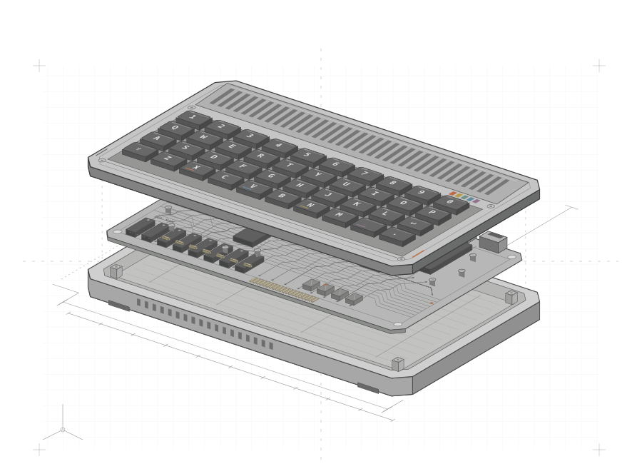

I want teams to do good work without having to fight the organization to get it done.
I bring the same curiosity to how engineering teams work that drew me to building software. The way we design a system shapes which teams have to work together to change it. The way we organize those teams shapes what they can build and how independently they can work.
When a problem keeps coming back, I start by asking why the current way of working makes sense to the people doing it. Who has enough context to make a decision? Who can act on it? How quickly will they know if it worked?
Sometimes the answer is to give teams more room to act, like making it possible for them to extend a shared service safely. Sometimes a piece of work needs one team to own it from start to finish. I look at what changes in the day-to-day work afterward, whether teams spend less time waiting for each other or can act sooner when something goes wrong.
AI has changed our craft faster than anything I’ve seen. In 2026, we’re all figuring out what works as we go.
What I'm working on now
AIOps and getting more leverage from AI across the software development lifecycle. As coding gets faster, more pressure shifts to architecture, code review, testing, and engineering judgment. I'm focused on helping teams rethink how they design, review, and validate software when AI does more of the implementation.
I believe leadership is about creating sustainable change.
A platform product teams can extend
Product teams waited weeks or months for new capabilities in shared backend services. I introduced self-service contribution workflows and engineering guardrails so they could safely make those changes themselves. Work that once took weeks could be completed in days, with less dependence on the platform team.
Getting things to done-done-done
A backend migration was supposed to take two years. Four years in, it was 30% complete. We needed to finish it to simplify the backend, reduce operational toil, and scale the platform. I brought the work into the platform team and led it to completion in a year, before coding agents were part of our workflow. We moved all production traffic to the new backend with zero downtime and no customer impact. The migration reduced latency and infrastructure costs and helped product teams ship features faster.
Fixing problems before customers notice
Reliability reviews happened monthly, after the fact. I moved the engineering organization to service-level objectives and error-budget monitoring so teams could detect and address regressions earlier. Reliability became something teams could act on between reviews, rather than assess only after the month had passed.
More examples +
Delivering under a tight deadline
Launching a new seller of record for EMEA required new workflows for billing customers and collecting payments. I led the work across finance, operations, customer support, and legal to get those workflows ready. The launch went ahead on time, addressing European tenants' billing concerns and reducing regulatory risk.
Growing an engineering hub
I joined a new technology hub as its second hire and helped grow the engineering and production organization to 60 people. I put hiring practices and career paths in place, and made delivery practices more consistent across offices in different countries.
Notes from the field
Thinking out loud. Occasionally irreverent.
I write about platform engineering and the practical, sometimes messy work of leading teams.
People find their way into programming in all sorts of ways. Sometimes it’s a friend’s recommendation, sometimes it’s curiosity, and sometimes it’s pure chance. For me, it was a book I got around my tenth birthday.
I’d never touched a computer, but the idea that a few lines of code could make a machine do something lit a spark that’s still burning. For the next year, the closest thing I had to a computer was graph paper.
If you didn’t grow up with a home computer like this, it’s hard to picture what using one was like. You plugged it into the family TV, switched it on, and started pecking out little programs in BASIC. Memory was measured in kilobytes, and every byte was precious.

Choose a component above or on the board. Simplified ZX Spectrum 16K, Issue 3 layout.
A small detour / ZX Spectrum 16K
Five lines. A whole picture.
Five lines of BASIC draw a curve using straight lines. Run the program, then change the spacing.
01 / The programSinclair BASIC
FOR repeats the loop. PLOT sets the starting point. DRAW adds a line relative to that point.
02 / The result256 × 192 pixels
Ready
Ready when you are.
16 KB RAM. Your program, its variables, and the screen all share it. The display alone takes 6,912 bytes. A separate 16 KB ROM holds BASIC and the system routines.
This browser demo runs the five BASIC statements above at a slowed pace. The drawing and board are simplified, not a full Spectrum emulator. Original BASIC manual ↗ · Hardware reference ↗
Answer a question by email. If you have a question about platform engineering, engineering leadership, or how teams build, review, and run software with AI, send me a short note. A little context and one clear question are plenty.
Make an introduction. If there’s someone I know you’d like to meet, tell me what you’d like to talk with them about. If I think the conversation would be useful to both of you, I’ll check with them first.
Write a blurb for a book. If you’re writing a book on a topic I know, send me a short description and your deadline. I’m happy to consider it if I have time to read it.
Join a podcast. If you have a topic in mind that overlaps with my work or writing, tell me a bit about your show and what you’d like to get into.